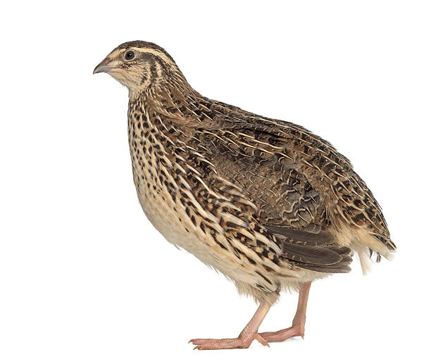
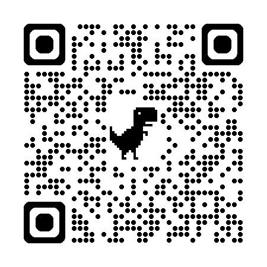

使用 Pillow 與 qrcode 套件實作 | 作者：你的名字
使用 Python 的 PIL 套件讀取風景照，將尺寸調整為 800x600，套用模糊與銳化濾鏡後，在圖片下方加上自訂字型與顏色的祝福文字。

from PIL import Image, ImageDraw, ImageFilter, ImageFont
img = Image.open("landscape.jpg").resize((800, 600))
img = img.filter(ImageFilter.BLUR).filter(ImageFilter.SHARPEN)
draw = ImageDraw.Draw(img)
font = ImageFont.truetype("arial.ttf", 36)
draw.text((40, 530), "Welcome to Taoyuan!", fill=(230, 85, 25), font=font)
img.convert("RGB").save("bird.jpg")結合 qrcode 與 Pillow 套件，將介紹網頁的網址轉換成 QR Code，調整大小後使用 paste() 合成至主圖片左上角。

import qrcode
from PIL import Image
bg_img = Image.open("photo.jpg").convert("RGB")
qr_img = qrcode.make("https://www.python.org/").convert("RGB").resize((100, 100))
bg_img.paste(qr_img, (20, 10))
bg_img.save("qrcode_en.pimg.jp.png")